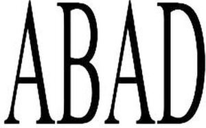

Trade Mark Journal No.2025/048 28 November 2025
WO0000001873041 (29,30,35)
Office of origin: India
Date of International Registration:29 May 2025
Date of designation in the UK:
29 May 2025

- Class 29
- Meat, processed meat, frozen meat products, meat extracts; sausages; meat paste; meat-based spreads; fish, not live; processed fish, fishery products, frozen fish; dried fish; frozen sea foods, frozen shell fish, processed sea food; canned sea food; poultry and game; dried and cooked fruits and vegetables; frozen vegetables; canned vegetables; milk and milk products; jams, compotes, eggs, edible oils and fats.
- Class 30
- Battered and breaded food products; prepared snacks and foods having a base of rice, of flour or of cereals all being indian meals; premixed and ready to cook prepared soups, curries or gravies all being indian meals premixed in powder or paste form and ready to cook, almond powder, chilli powder, spices in powder form condiments; ready-to-eat frozen foods; pickles and relish, bread, pastries, cakes, confectionaries, honey, yeast, salt, pepper, vinegar, ices, biscuits, cookies, chocolates, pulses, papad, sweets, pasta, pao and roti all being goods included in class 30.
- Class 35
- Wholesale, retail, online retail store services connected with the sale of vegetarian, non-vegetarian, processed and un processed food stuffs, sea foods, fruits, vegetables and grains; professional staffing services; employment staffing consultation services; job and personnel placement; human resources services, namely, personnel selection for others; human resources services namely, recruiting and placing technical professionals and staff; employment staffing consultation services; employment agency services, namely, filling the temporary and permanent staffing needs of businesses.
ABAD FISHERIES PRIVATE LIMITED
Representative: ROBIN JACOB, Marcmedius, Door No. 1450/A, Chammani Road,, OPP. Seventh-Day Adventist Higher Secondary School,, Kaloor, kochi, Kerala 682017, INDIA